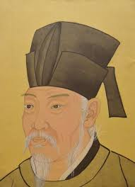

About Bai Juyi
Bai Juyi (772–846), also known as Po Chu-i, was a renowned Chinese poet of the Tang dynasty.
He is famous for his lyrical poetry and vivid descriptions of everyday life.
Throughout his career, Bai Juyi held various government positions, but he is best remembered for his literary contributions.
